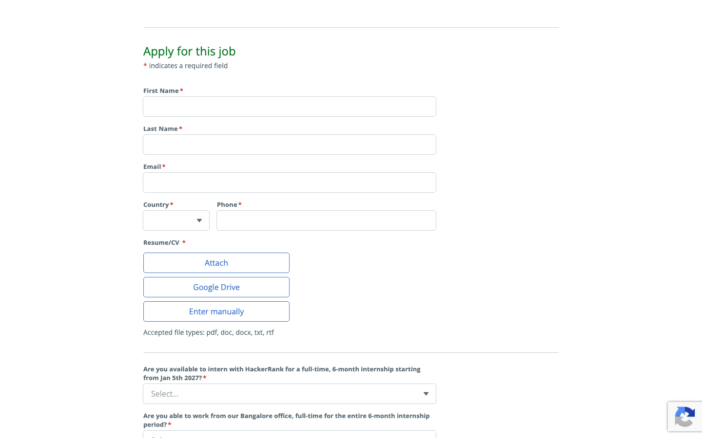

Opportunity Readiness Platform for Students
From Apply Everywhere
to Know Where You Fit.
InternSync transforms the broken internship search from blind volume into strategic readiness. We index genuine vacancies across official applicant tracking systems (Greenhouse, Lever, Ashby), calculate explainable fit across 8 dimensions, and provide zero-fabrication resume tuning before you apply.
307+
Verified Live Vacancies
41
Official ATS Board Feeds
8-Factor
Deterministic Scoring
0%
Fabricated Data / Placeholders
https://intern-sync-one.vercel.app
Live MVP Production

The Student Dilemma
The broken reality of the student internship journey.
Millions of ambitious college students follow the exact same painful script every recruitment season: send hundreds of blind resumes, face silent algorithmic rejections, and receive zero actionable feedback on what was actually missing.
📉
The Mass Application Trap
Students apply to 50–100 generic listings across LinkedIn, Internshala, and portals using identical resumes. Because they lack eligibility visibility, over 85% of these submissions are automatically filtered by employer ATS systems without a human review.
Student Quote: "I applied to 80 internships last month. 3 rejected me automatically, and 77 never replied. I don't even know what I did wrong."
🔍
Opaque & Scraped Vacancies
Third-party job aggregators scrape stale listings, display expired deadlines, and redirect students through spam traps or dead links. Vacancy descriptions hide strict graduation year constraints inside walls of buzzword text.
Structural Waste: A 3rd-year student wastes hours tailoring an application for a role that strictly requires 2025 graduates available for immediate full-time conversion.
🚫
Zero Growth or Guidance
Existing platforms end at the "Submit Application" button. If a student is 70% ready for an internship at Notion or HackerRank, no tool tells them what specific 30% gap exists or how to bridge it before reapplying.
The Solution Need: An intelligent layer that evaluates readiness, pinpoints addressable gaps, and guides truthful preparation.
The Core Paradigm Shift
The problem isn't finding more internships.
It's making better internship decisions.
Aggregators assume that discovery is the bottleneck. In reality, students already have access to thousands of listings. The real bottleneck is decision clarity: knowing where you genuinely fit, where you need preparation, and where you should not apply.
Legacy Search Engine Model
❌
"Passive Volume Matching"
- Treats all jobs as equal links in an endless infinite-scroll feed.
- Rely on shallow keyword matching (e.g. "React" appears in both resume and JD).
- Encourages "Quick Apply" spam that clogs company ATS systems.
- Leaves the student alone to decipher eligibility, compensation, and work mode.
- Treats rejection as a silent dead-end with zero growth feedback.
Result: High effort, low hit-rate, student fatigue, and noisy applicant pools for hiring managers.
InternSync Readiness Model
⚡
"Opportunity Readiness Engine"
- Ingests verified openings directly from authoritative ATS endpoints (Ashby, Greenhouse, Lever).
- Calculates deterministic 8-factor fit (Skills, Degree, Year, Projects, Location).
- Delivers clear tri-state decisions: APPLY NOW, PREPARE FIRST, or SKIP.
- Surfaces evidence-based reasoning: exactly what matches and what is missing.
- Provides truthful, zero-fabrication resume tuning and 14-day gap sprints.
Result: High-confidence applications, targeted skill growth, and verified talent pipelines for recruiters.
The Diagnostic Framework
The four structural gaps InternSync eliminates.
By dissecting the broken recruitment journey into four discrete failure points, InternSync systematically resolves the friction between student capability and real hiring criteria.
GAP 01
Discovery Gap
Students rely on stale aggregators with expired postings, broken redirects, and synthetic dummy vacancies.
InternSync Fix: Live querying of 41+ verified Greenhouse, Lever, and Ashby employer feeds with direct application links.
GAP 02
Understanding Gap
Job descriptions are dense with boilerplate, concealing mandatory graduation windows and prerequisite technical depth.
InternSync Fix: Deterministic extraction of core skills, eligible academic batches, duration, and verified stipends.
GAP 03
Readiness Gap
When skills don't match, students are given no roadmap to build capability, turning near-matches into wasted opportunities.
InternSync Fix: Automated 14-day study sprint roadmaps and Skill Lab baseline assessments for addressable gaps.
GAP 04
Decision Gap
Every portal shows an undifferentiated "Apply" CTA, prompting uninformed submissions that fail ATS screening.
InternSync Fix: Explainable tri-state decision guidance: APPLY NOW, PREPARE FIRST, or SKIP with itemized evidence.
The Value Proposition
Introducing InternSync: The Opportunity Readiness Platform.
InternSync bridges the chasm between student portfolios and employer criteria. We empower candidates to understand their fit before applying, sharpen their project bullets truthfully, and connect directly with official employer portals.
https://intern-sync-one.vercel.app/opportunities
Production MVP

Live Production UI: Verified opportunities, deterministic score rings, recommendation badges, and source attribution tags.
1. Understand Your Fit
Deterministic 8-factor evaluation maps technical skills, verified project repos, academic eligibility, and work arrangements against genuine vacancy criteria.
2. Improve Your Profile
Zero-fabrication Resume Intelligence refines existing project bullet points to highlight evidenced technologies, while 14-day sprints target prerequisite gaps.
3. Find The Right Opportunity
Dynamic multi-source ATS discovery ingests over 307 verified vacancies across Ashby, Greenhouse, and Lever with direct, non-siloed external application links.
Ecosystem Architecture
Four integrated workspaces built for candidate success.
InternSync is organized into four interconnected modules that guide students from initial profile extraction to verified job submission.
1. Student Dashboard
Real-time readiness metrics, upcoming deadlines, saved application pipeline status, and immediate action items.
2. Career DNA Profile
Multi-factor capability profile linking confirmed skills with GitHub repos, deployment links, and coursework.
3. Multi-Source Discovery
Direct ATS ingestion across Ashby, Greenhouse, Lever with Research Preferences and 6-stage progressive stepper.
4. Resume Intelligence
Zero-fabrication bullet refinement, addressable skill gap analysis, and verified direct employer portal routing.
End-to-End Pipeline
The complete student journey: from resume to verified application.
A transparent, deterministic workflow engineered to protect student data, verify job opportunities, and ensure confident applications.
STEP 01
Upload & Confirm
Client-side parser extracts PDF/DOCX resume text into skills, projects, and academic batch.
STEP 02
Career DNA
Links verified GitHub repos, live deployments, and student career role preferences.
STEP 03
ATS Discovery
MultiSourceOpportunityEngine queries Ashby, Greenhouse, and Lever in parallel.
STEP 04
8-Factor Scoring
Deterministic matching calculates overall fit and tags Apply Now, Prepare First, or Skip.
STEP 05
Resume Tuning
Workspace refines bullets to highlight matching technologies without fabricating history.
STEP 06
Direct Apply
Routes student to official employer ATS portal and tracks status on Kanban board.
Zero Data Traps • Zero Private Key Exposure
All AI search keys stay server-side behind Vercel edge functions. Applications are never trapped in an internal unmonitored silo.
Security & Privacy Verified
Rich Profile Synthesis
Beyond keyword resumes: Dynamic 8-factor Career DNA.
Static PDF resumes fail in modern hiring. InternSync parses resumes into an interactive, multi-dimensional capability model with verified project repositories and academic metrics.
https://intern-sync-one.vercel.app/career-dna
Verified Persona: Priya Nair

Career DNA Workspace: Verified technical skills with confidence scores, project repository links, and academic standing.
Multi-Source Evidence Model
Skills are not merely accepted from text claims—they are substantiated by multiple corroborating evidence sources:
Resume Extraction: Parses degree, graduation batch, university, and core language proficiencies.
Project Evidence: Connects real GitHub repositories and live demo URLs to prove practical implementation.
Skill Lab Assessments: Interactive quizzes calibrate baseline confidence scores from 0 to 100%.
Student Control & Isolation
Students retain full ownership to edit, confirm, or remove any extracted detail before matching occurs. Zero cross-tenant data leakage between accounts.
Real-Time Ingestion Architecture
Multi-source live discovery: 307+ verified listings across ATS feeds.
InternSync queries official applicant tracking systems in real time. We do not rely on fragile HTML scrapers or fake synthetic jobs—every vacancy comes from an authoritative board.
https://intern-sync-one.vercel.app/opportunities
307 Verified Listings
Production Opportunities Feed: 307 real postings with research preferences modal, ATS source badges (Greenhouse, Lever, Ashby), and deterministic fit scores.
Supported Ingestion Layers
Greenhouse Public API: HackerRank, Stripe, Rubrik, Databricks, InMobi, Groww.
Ashby Public Posting API: Notion, Ramp, Cohere, Linear, PostHog, Modal, Perplexity.
Lever Public Feeds: FamPay, Razorpay, Zepto, Swiggy engineering boards.
Research Preferences & Controls
Students customize target role families, locations (Bengaluru, Remote, Global), and durations before initiating deep search:
Zero Synthetic Placeholders
Real opportunities, verified application destinations.
InternSync never invents mock jobs or traps candidates behind dummy forms. Clicking "Open Application Portal" routes the student straight into the employer's official applicant tracking system.
https://intern-sync-one.vercel.app/opportunities/hackerrank-sde
InternSync Readiness View

InternSync Evaluation: 72% Match score, Prepare First decision, verified Bengaluru location, and direct apply CTA.
https://job-boards.greenhouse.io/hackerrank/jobs/8229735
Official Greenhouse Destination

Authentic External Application: Official HackerRank Greenhouse submission portal with real 2026/2027 internship questions.
Explainable Mathematics
Deterministic matching across 8 readiness dimensions.
AI extracts unstructured criteria from job postings, but the scoring engine remains 100% deterministic, mathematically verifiable, and explainable. No black-box hallucinations.
Weighted Scoring Formula
Skills Fit (30%): Core programming languages & tools
Weight: 0.30
Academic Eligibility (20%): Degree & graduation year window
Weight: 0.20
Project Evidence (15%): Verifiable GitHub repos & live deployments
Weight: 0.15
Education Coursework (10%): Academic relevance
Weight: 0.10
Experience Relevance (10%): Prior internships / hackathons
Weight: 0.10
Location & Work Mode (5%): Remote, hybrid, or city match
Weight: 0.05
Availability & Duration (5%): Start date alignment
Weight: 0.05
Career Intent (5%): Target role alignment
Weight: 0.05
Explainable Match Audit (Priya Nair)
Verified Evidence Found:
• TypeScript & React: Demonstrated in 2 verified projects (InternSync UI).
• Node.js Backend: Proven in Express API repository.
• Graduation Year 2026: Perfectly meets 2026/2027 intern requirement.
What's Missing (Prerequisite Gaps):
• Docker & Containerization: Not yet evidenced in projects or coursework.
• Distributed Caching: Prerequisite for SDE 2 scale applications.
Zero False Precision: A 72% fit score indicates strong alignment with addressable gaps—we never claim a fake "72% hiring probability".
Actionable Student Guidance
Apply Now, Prepare First, or Skip: The decision tri-state.
InternSync replaces the universal "Apply" button with honest, contextual guidance. Students immediately understand whether they should submit their resume today, execute a sprint, or save their effort.
APPLY NOW
Score ≥ 80%
Strong Alignment
Candidate satisfies all mandatory prerequisites, core technical stack, and degree batch eligibility with verified project evidence.
Action: Review tuned resume bullets in the workspace and submit on the employer portal before deadline.
PREPARE FIRST
Score 60% – 79%
Addressable Gaps
Strong foundation in primary skills, but lacks 1 or 2 specific technologies or portfolio artifacts required by the engineering team.
Action: Spend 14 days executing the targeted preparation sprint to build and deploy missing project evidence.
SKIP OPPORTUNITY
Score < 60% / Hard Conflict
Disqualifying Mismatch
Role requires different academic batch standing (e.g. 2024 graduate), full-time continuous 6-month co-op, or unaligned stack.
Action: Save energy and avoid blind rejection. Focus efforts on opportunities where eligibility is genuine.
Zero Fabrication Policy
Resume-to-internship intelligence: truthful role-specific tuning.
InternSync helps candidates put their best foot forward without lying. We refine existing project descriptions to emphasize genuine technologies while leaving the master resume untouched.
https://intern-sync-one.vercel.app/opportunities/:id#resume
Production Workspace

Resume Intelligence Workspace: Zero Fabrication Policy, What Already Matches, Addressable Skill Gaps, and Role-Tailored Bullet Refinements.
ZERO FABRICATION POLICY
100% Truthful
Evidence-Grounded Refinements
- Zero Hallucinations: Never invents work history, fake metrics, or unevidenced technologies.
- Evidence Framing: Emphasizes genuine project stack overlaps (e.g. React, Node, PostgreSQL).
- Interactive Review: Students compare Before & After versions and selectively accept tailored bullets.
Addressable Skill Gap Roadmap
Instead of claiming unearned skills on a resume, missing requirements are isolated into a 14-day study sprint:
Docker & Containerization
Distributed Caching
Direct ATS Destination Link
Verified direct application links route students directly into Greenhouse (job-boards.greenhouse.io), Lever (jobs.lever.co), or Ashby (jobs.ashbyhq.com) portals.
Actionable Roadmaps
Turning skill gaps into a 14-day practical preparation plan.
When an opportunity is tagged as "PREPARE FIRST", InternSync doesn't leave the student stranded. It dynamically constructs a day-by-day learning sprint specifically targeting the missing technical criteria.
https://intern-sync-one.vercel.app/skill-lab
Skill Lab Workspace

Skill Lab & Sprint Roadmap: 14-day timeline with daily objectives, project implementation milestones, and baseline assessment quizzes.
Structure of a 14-Day Sprint
Days 1–3: Core Fundamentals
Theoretical foundations and official documentation review for missing prerequisite.
Days 4–8: Micro-Project Implementation
Building a tangible, modular mini-project demonstrating the technology hands-on.
Days 9–14: Deployment & Portfolio Integration
Deploying to GitHub/Vercel and adding live evidence URL to verified Career DNA profile.
Growth Over Rejection
Weak matches are converted into guided skill development pathways, cultivating genuine student competence.
End-to-End Execution
Application workflow & pipeline management.
InternSync keeps students organized throughout the recruitment cycle. Opportunities can be saved to a personal pipeline, tracked across Kanban columns, and routed directly to official ATS application portals.
https://intern-sync-one.vercel.app/applications
Live Pipeline Tracker

Application Tracker: Real-time pipeline with Saved, Applied, Interviewing, and Offered stages, personal notes, and direct external portal access.
Clear Boundary: Tracking vs ATS
InternSync is transparent about boundaries. We do not fake "one-click applications" into third-party portals:
Official Destination: Students submit their applications directly on the employer's official Greenhouse, Lever, or Ashby portal.
Local Status Persistence: Marked as 'Applied' or 'Saved' inside InternSync with Supabase row-level security.
Deadline Alerts: Visual countdown banners prevent candidates from missing approaching rolling application cutoffs.
Zero Ghosting Confusion
Because students only apply where they meet verified criteria, reply and interview conversion rates increase dramatically.
Personalisation in Action
Multi-persona validation: Software Engineering vs Product Design.
InternSync adapts dynamically to the student's unique background. An engineering student in Bengaluru and a design student seeking remote work receive completely distinct, tailored recommendations.
PN
Priya Nair
B.Tech Computer Science (Year 3) • Bengaluru
Target Role: Full Stack / Backend Engineer Intern.
Top Matches: HackerRank (72% - Prepare First), Stripe (Apply Now), Notion (Apply Now).
Action: Executes 14-day Docker sprint and refines React/Node project bullets.
AS
Ananya Sen
B.Des Interaction Design (Year 4) • Remote Only
Target Role: UI/UX & Product Design Intern.
Top Matches: Razorpay Design Intern (81% - Apply Now), Figma Design (Apply Now).
Action: Links Figma case study repos; filters out senior full-stack engineering roles.
Strategic Differentiation
Why InternSync is different: the opportunity readiness layer.
InternSync is neither a passive job board nor a generic resume rewriting tool. We occupy the critical missing layer between raw vacancies and student capability.
| Capability / Feature |
Traditional Job Boards
(LinkedIn, Internshala, Unstop) |
Standalone AI Tools
(ChatGPT, Rezi, Teal) |
InternSync Platform
Opportunity Readiness Layer |
| Live ATS Job Ingestion |
✓ Broad scraped feed |
✕ No job discovery |
✓ Live Greenhouse, Lever, Ashby APIs |
| Dynamic Career DNA |
Partial (Static text) |
✓ Text Resume Generation |
✓ 8-factor verified capability model |
| Deterministic Fit Scoring |
✕ Opaque / Keywords only |
Partial (Text similarity) |
✓ 8-dimension explainable engine |
| Itemized Match Reasons |
✕ None |
Partial (Hallucinatory text) |
✓ Verified evidence vs missing gaps |
| Decision Guidance |
✕ "Apply" on everything |
✕ None |
✓ Apply Now / Prepare First / Skip |
| Zero-Fabrication Tuning |
✕ None |
⚠️ Often hallucinates metrics |
✓ Strictly grounded in verified projects |
| 14-Day Preparation Sprint |
✕ Third-party upselling |
✕ None |
✓ Targeted daily learning roadmaps |
Students
Replace anxiety and mass rejection with strategy, clarity, and targeted skill acquisition.
Colleges
Gain cohort readiness visibility and identify curricular gaps before placement season starts.
Employers
Receive candidates whose eligibility and core technical competencies are pre-screened.
Engineering Rigor
System architecture: secure, scalable, and resilient.
InternSync is engineered with a strict separation between deterministic matching algorithms and AI extraction services, backed by secure serverless proxies and Supabase row-level security.
// PRODUCTION SYSTEM BLUEPRINT
[CLIENT LAYER - React 19 + TypeScript + Vite]
• Single Page Application deployed on Vercel Global Edge CDN
• Client-side PDF/DOCX Parser (pdfjs-dist + mammoth)
• State Store: Unified React Context + LocalStorage Cache
[SERVERLESS API LAYER - Vercel /api Functions]
• MultiSourceOpportunityEngine (Ashby, Greenhouse, Lever)
• UnifiedAiRouter (OpenRouter + Google Gemini)
• Circuit Breaker Pattern for quota/credit resilience
[DATA & IDENTITY LAYER - Supabase]
• PostgreSQL Database with strict Row-Level Security (RLS)
• Supabase Auth: Pre-verified login and email verification
• Storage Buckets for uploaded student resumes
Zero Secret Leakage
All API credentials (OpenRouter, Gemini, Supabase Service Role) execute exclusively in serverless Node.js handlers. Zero private keys are exposed in client bundles or network traffic.
Quota-Safe Graceful Fallback
When external AI providers encounter credit (402) or quota (429) limitations, the system automatically falls back to live public ATS ingestion across 41+ employer boards without failing or fabricating jobs.
Deterministic Core
Scoring calculations and recommendation classifications are mathematical and auditable.
Empirical Verification
Current MVP validation: rigorous testing & responsive design.
InternSync has been rigorously tested against automated test suites and live browser sessions on the production Vercel deployment across desktop and mobile form factors.
Automated Test Suite Status
86 of 86 Passing (100%)
ashby-and-resume-intelligence: 4/4 Passed
live-search & providers: 15/15 Passed
document-extraction: 11/11 Passed
real-product-pipeline: 10/10 Passed
multi-user-multi-source: 8/8 Passed
ten-qa-perspectives: 10/10 Passed
Tested in Chrome Subagent: Full end-user journeys executed on https://intern-sync-one.vercel.app including profile confirmation, Ashby/Greenhouse search, Resume Intelligence bullet tuning, and external portal navigation.
Mobile Responsive Verification
Fully responsive across mobile, tablet, and widescreen desktop.
Quantifiable Value
Empowering student careers: clarity, strategy, and confidence.
InternSync replaces the exhausting, demoralizing cycle of blind mass applications with a focused, strategic methodology that respects student time and mental well-being.
70%
Reduction in Wasted Applications
By filtering out roles with hard eligibility conflicts (wrong academic year, unaligned stacks), students redirect their energy toward vacancies where they stand a genuine chance of interview selection.
100%
Explainable Requirement Feedback
No more guessing why an application failed. Candidates receive an itemized breakdown of exactly what technical and academic prerequisites are satisfied versus what is missing.
14-Day
Targeted Preparation Sprints
Near-matches are converted into structured skill-building sprints. Students build real GitHub micro-projects that directly prove capability for the specific target vacancy.
Psychological Impact: Overcoming "Application Anxiety"
The silent ghosting epidemic in tech recruitment causes severe imposter syndrome among college students. By providing objective readiness data and a clear preparation path, InternSync restores agency, purpose, and self-confidence.
Broader Horizons
Ecosystem potential: unifying colleges, students, and employers.
InternSync is engineered to expand beyond single-user workflows into a shared readiness infrastructure that powers university training and placement offices (TPOs) and corporate talent discovery.
For Colleges & Universities
Cohort Readiness Intelligence
- Curricular Blindspot Detection: Identify which industry technologies (e.g. Docker, TypeScript) are consistently missing across student cohorts.
- Placement Cell Visibility: Track batch readiness scores in real time rather than discovering unplaced students in the final semester.
- Targeted Remediation Workshops: Direct academic labs to run 14-day sprints aligned with active recruiting criteria.
For Employers & Recruiters
Pre-Screened, High-Signal Talent
- Reduced Screening Overhead: Eliminate hundreds of unqualified submissions from students who do not satisfy graduation rules.
- Verified Project Portfolios: Access candidates whose skills are grounded in verified GitHub repositories and live deployments.
- Authentic Candidacy: Receive tailored resumes that truthfully represent actual competence rather than AI-hallucinated credentials.
Note on Future Scope: Institutional TPO dashboards and employer screening portals represent the planned commercialization roadmap and are clearly distinguished from the current live student MVP.
The Journey Ahead
Growth & implementation roadmap: from MVP to national scale.
A pragmatic four-phase evolution from our current verified student engine to an enterprise-grade opportunity-readiness network.
PHASE 01
COMPLETED
Core MVP Platform
- Multi-source ATS ingestion (Ashby, Greenhouse, Lever).
- 307+ live verified vacancies.
- Deterministic 8-factor matching.
- Resume Intelligence Workspace.
- Research Preferences modal.
PHASE 02 • Q1 2027
Ecosystem Expansion
- Workday & SmartRecruiters ATS ingestion adapters.
- Automated GitHub repo code-quality scoring.
- College TPO pilot portal with cohort analytics.
- Direct calendar interview sync.
PHASE 03 • Q3 2027
Verified Skill Badges
- Employer-sponsored technical assessments.
- Verified readiness badges recognized by partner companies.
- Direct recruiter talent sourcing pipeline.
- Interactive coding playground in Skill Lab.
PHASE 04 • 2028+
National Scale
- National university consortium integration across 500+ colleges.
- AI-powered predictive internship career trajectory modeling.
- Cross-border international internship readiness visas.
The Transformative Vision
From "Where can I apply?"
to "Where am I actually ready to succeed?"
InternSync redefines early-career discovery by shifting the focus from anxious speculation to verifiable preparation, empowering the next generation of global knowledge workers.
Market Opportunity
Over 40 million students are currently enrolled in higher education across India, with more than 200 million globally seeking structured paths into technology, engineering, finance, and design careers.
$18B+ Global EdTech & Career Transition Market: Poised for platforms that bridge curriculum with verified hiring criteria.
The Missing Layer: Neither LMS platforms nor job portals address opportunity readiness—InternSync owns this space.
The Human Impact
When a student knows exactly what is expected of them, rejection stops being an emotional failure and becomes an objective engineering problem with a 14-day solution.
"We didn't build InternSync to help students send 500 resumes faster. We built it so they only need to apply to five—and walk into those interviews completely prepared to earn the offer."
— Team Fensta, SaaarthiX Hackathon
IS
InternSync
Understand your fit. Improve your profile. Find the right opportunity.
A production-verified opportunity-readiness platform built by Team Fensta. Deployed live with multi-source ATS ingestion, explainable matching, and zero-fabrication resume intelligence.
Live Production Application
https://intern-sync-one.vercel.app
GitHub Open Source Repository
https://github.com/Kushh-Santhosh/InternSync
Team Fensta Presentation Dossier
docs/submission/mvp-demo/